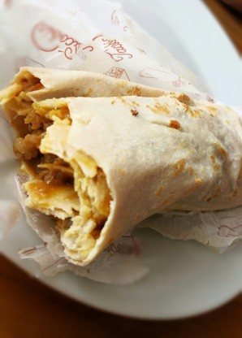

Bang Bang Burrito

Description
A crisp chicken Burrito with Bang Bang Sauce
These quick and easy bang bang burritos feature chicken strips, coleslaw mix, and a delicious 3-ingredient bang bang sauce.
Wrapped in a tortilla and pan fried, they're hot, golden and crunchy.
Ingredients
- 4 flour tortillas
- 1/2 cup of Mayonnaise
- 1/4 cup of sweet chili sauce
- 2 tablespoons Sriracha
- 10 to 15 frozen chcken strips
- 2 cups of coleslaw mix
Steps
- Stir mayonnaise, chili sauce, and Sriracha sauce together in a bowl and set aside.
- Prepare chicken strips in the air fryer according to package directions and cut into bite-sized pieces.
- Toss chicken strips with bang bang sauce until evenly coated. Divide chicken mixture among tortillas and place just below the center of each tortilla.
- Top evenly with slaw mix. Fold the sides slightly over the filling and roll the tortilla up from the bottom.
- Heat butter in a large nonstick skillet over medium-high heat until melted. Place burritos, seam side down, in hot skillet and cook until toasted golden brown, about 2 minutes. Flip and cook the other side until golden brown and toasted, about 2 minutes more.
Enjoy!
Home